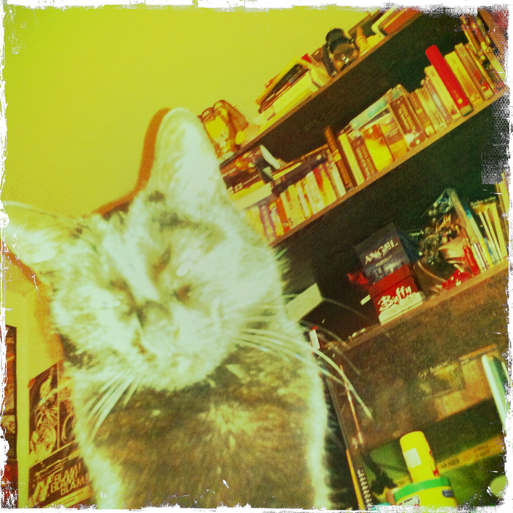

"Котаракът, невероятно едър, красив и напълно черен, без едно петънце, беше изключително интелигентен. Щом станеше дума за неговия ум, жена ми, вътрешно не съвсем чужда на суеверията, често намекваше за старинното поверие, че черните котки са вампири. Разбира се, намеците не бяха съвсем сериозни и привеждам тази подробност, просто защото сега е времето да я спомена.
Плутон, така се казваше котаракът, беше мой любимец и често играех с него. Хранех го само аз, затова винаги вървеше по петите ми. Дори се изхитряваше да се измъква на улицата и ми струваше доста усилия да го отуча от това.
Приятелството ни продължи няколко години и за това време моят характер — под влияние на Дяволската съблазън — рязко се промени в отрицателна посока (срамувам се да го призная). С всеки изминат ден ставах все по-мрачен, раздразнителен, безразличен към околните. Позволявах си да нагрубявам жена си, дори да й вдигам ръка. Моите питомци, естествено, също усещаха тази промяна. Не само престанах да им обръщам внимание, но започнах да се държа с тях отвратително. Към Плутон обаче запазих своята грижовност и не си позволявах да го обиждам, както постъпвах със зайците, с маймуната и дори с кучето. Но болестта ми се развиваше — няма нищо по-ужасно от пристрастяването към алкохола! — и накрая даже Плутон, който с годините ставаше капризен, започна да се дразни от моя отвратителен характер."
Из "Черната котка", Едгар Алан По